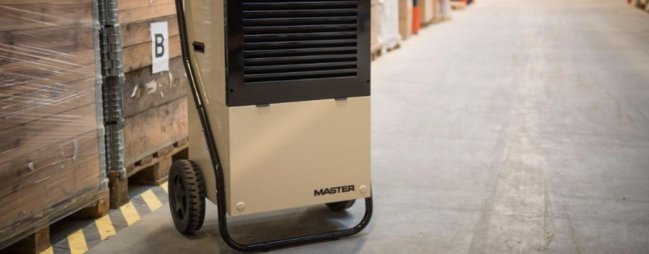
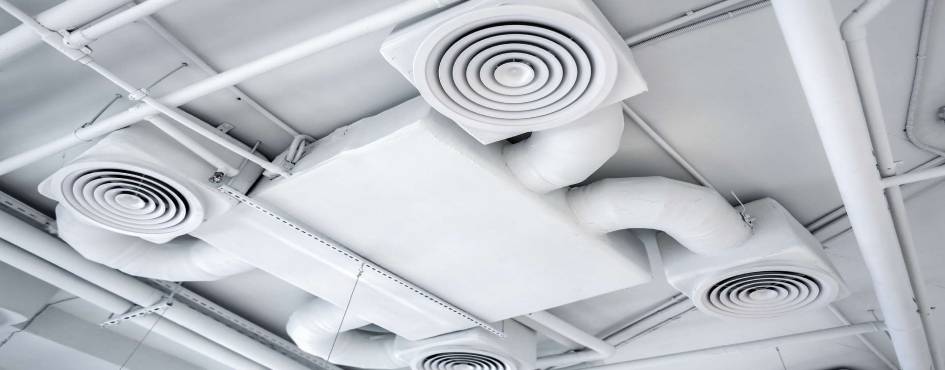
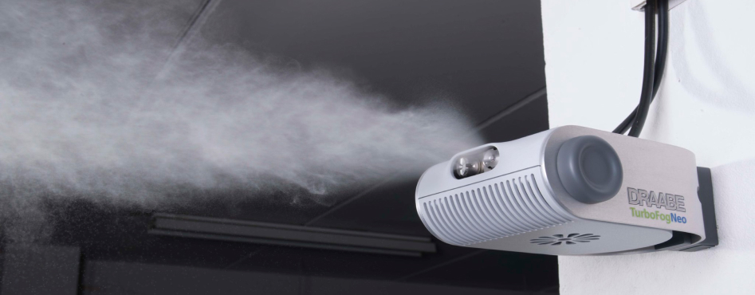

Необходимым условием для поддержания работоспособности сотрудников, занятых на производстве, и развития самого производства является создание и поддержание комфортного микроклимата помещений, будь то рабочий цех или место для хранения готовой продукции. Часто возникающая проблема в этой области — несоответствие уровня влажности помещения для реализации поставленных задач. Этот показатель может быть как выше, так и ниже нормы. Причем норма влажности на овощной базе будет отличаться от нормы на целлюлозном производстве.
Слишком сухой воздух грозит сотрудникам затрудненным дыханием, высушиванием слизистой носоглотки и кожи, что приводит к снижению защитных функций организма. Для находящихся гигроскопичных материалов — бумаги, дерева, фруктов и овощей — все закончится деформацией внешнего вида и качества продукции: бумага скукожится, древесина потрескается, а фрукты с овощами сморщатся.
При повышенной влажности воздуха накапливаются бактерии, из-за которых начинаются гнилостные процессы в изделиях растительного производства и коррозионные — в металлических.
Влажность воздуха бывает абсолютной и относительной. Второй показатель зависит от температуры воздуха.
Оптимальные показатели относительной влажности для различных производственных помещений таковы:
Чтобы избавиться от излишней влажности, можно использовать промышленный осушитель воздуха или установить промышленную вентиляцию.
По способу действия промышленные осушители воздуха бывают конденсационные и адсорбционные. Выбор оборудования зависит от рабочей температуры в помещении, категория помещения, наличия функции направленного воздушного потока и других.
Например, в помещении с рабочей температурой от 5 до 35°C устанавливают конденсационный осушитель. Если температура выходит за пределы этого диапазона, тогда нужен адсорбционный.
На всех этапах производства — от конвейерных установок до хранилищ готовой продукции — необходимо соблюдать оптимальную температуру, циркуляцию воздуха и влажность. Поможет в этом правильно выбранный тип вентиляции для производства, которая забирает из помещений влажный воздух, выводит его наружу и заменяет свежими.
Промышленная вентиляция — специальная система, включающая устройства и технологические приборы, способные обеспечить обмен воздуха больших объемов между помещением и улицей.
Монтаж вентиляции должны предварять мероприятия по устранению утечки воздуха и его избыточного скопления. Например, нужно закрыть щели и трещины в стенах и напольном покрытии.
Низким показателем влажности «страдают» текстильное, целлюлозное, деревообрабатывающее и другие производства. Справиться с проблемой помогут ультразвуковые увлажнители и промышленная вентиляция.
Увлажнители за счет создания микроскопических частиц воды, которые смешиваются с воздухом, повышают влажность помещения. Вентиляция создает движение воздуха и, проводя его через фильтры, обеспечивает приток чистого воздуха.
Поддержание оптимальной влажности воздуха — необходимое условие эффективного производственного процесса. Нормальный микроклимат сохраняет стены и конструкции, производственное оборудование и готовую продукцию.
Также хорошее самочувствие имеют сотрудники, от дееспособности которых напрямую зависит результат!